Proyecto final de Móviles, primera evaluación. Fecha: 16/11/2026.
gradlew.bat testDebugUnitTest --offline: 67 tests, 0 fallos (64 originales más 3 de la ampliación de E16).gradlew.bat assembleDebug --offline: compila sin errores.connectedDebugAndroidTest, el sensor de agitar (E05), el intercambio Bluetooth real entre dos móviles (E15), la descarga correcta de un endpoint HTTPS (E12) ni las pruebas de permiso de micrófono rechazado y de descarte de una grabación sin guardar (E08).MainActivity.kt: al importar una imagen, inSampleSize empezaba en 0 y la división posterior lanzaba "divide by zero"; ahora se inicializa en 1.MainActivity.kt: el panel de E16 muestra una línea con E16Panel.summary (ampliación propia, pendiente de acordar con el docente).E16AmpliacionTest.kt: tres pruebas nuevas para la ampliación.| Ejercicio | Título |
|---|---|
| E01 | Más equipos reales |
| E02 | Buscar, filtrar y ordenar |
| E03 | Etiquetas y valoración personal |
| E04 | Comparar fichas sin inventar datos |
| E05 | Sorpresa respetando filtros |
| E06 | Filtro de contraste reversible |
| E07 | Imagen persistente por jugador |
| E08 | Playlist y comentarios de voz |
| E09 | Once inicial 4-3-3 |
| E10 | Colecciones múltiples |
| E11 | Copia de seguridad validada |
| E12 | Datos guardados sin conexión |
| E13 | Reto de cinco preguntas |
| E14 | Diseñar y compartir cromo |
| E15 | Intercambio con confirmación |
| E16 | Panel de mi colección |
addTeam: rechaza lote vacío, varios clubes, posición no admitida, fuente sin HTTPS, IDs repetidos y jugador repetido en su club.TextKey, porque así "Athletic Club" y "athletic club" cuentan como uno solo.E01Test y con el formulario de Añadir equipos: la primera captura carga los lotes y la segunda rechaza un ID repetido.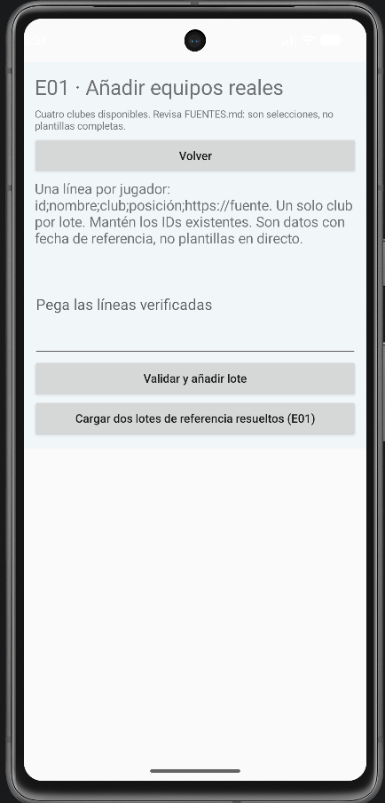
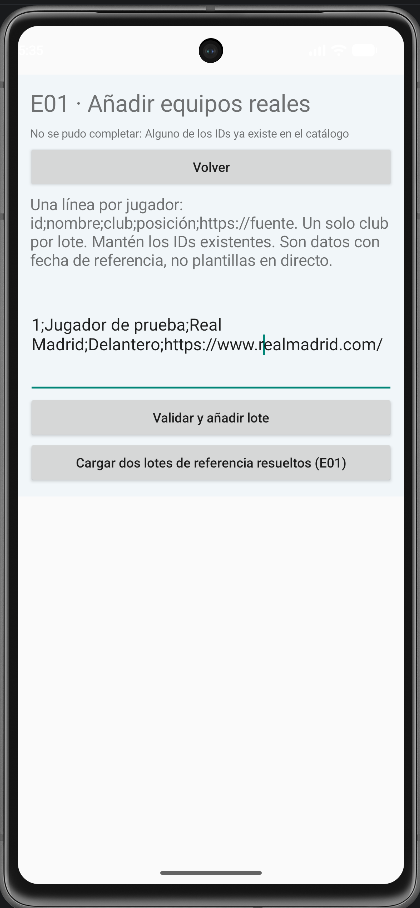
E01Catalogo.ktpackage es.aula.futbol
// Declara el objeto E01Catalogo: aquí vive tu solución evaluable.
object E01Catalogo {
// Añade un lote nuevo al catálogo actual, validando todas las reglas.
// ENTRADA: current = lista actual; incoming = lote nuevo de UN club.
// SALIDA: la lista actualizada. Si algo no cumple las reglas: error (require).
fun addTeam(current: List<Player>, incoming: List<Player>): List<Player> {
// Posiciones admitidas: son las mismas que usa el resto de la app.
val positions = setOf("Portero", "Defensa", "Centrocampista", "Delantero")
// Un lote vacío no aporta nada, por tanto se rechaza.
require(incoming.isNotEmpty()) { "El lote está vacío" }
// Todo el lote debe pertenecer a un único club (se compara sin tildes ni mayúsculas).
val clubs = incoming.map { TextKey.of(it.club) }.toSet()
require(clubs.size == 1 && clubs.first().isNotEmpty()) { "Un lote debe tener un único club" }
// Cada ficha necesita nombre, posición conocida y fuente HTTPS: así no se inventan datos.
incoming.forEach { p ->
require(p.name.isNotBlank()) { "Ficha sin nombre (id ${p.id})" }
require(p.position in positions) { "Posición no admitida: ${p.position}" }
require(p.source.startsWith("https://") && p.source.length > 8) { "La fuente de ${p.name} debe ser HTTPS" }
}
// Los IDs no pueden repetirse dentro del lote ni chocar con el catálogo actual.
val ids = incoming.map { it.id }
require(ids.toSet().size == ids.size) { "IDs repetidos dentro del lote" }
require(ids.none { id -> current.any { it.id == id } }) { "Alguno de los IDs ya existe en el catálogo" }
// Un jugador es el mismo si coinciden nombre y club, aunque tenga otro ID.
fun key(p: Player) = TextKey.of(p.name) + "|" + TextKey.of(p.club)
val seen = current.map { key(it) }.toMutableSet()
incoming.forEach { require(seen.add(key(it))) { "Jugador repetido en su club: ${it.name}" } }
// Todo es válido: se devuelve el catálogo actual más el lote, sin tocar el original.
return current + incoming
}
// demo() lo usa Academia para probar tu función con el lote del Athletic.
// Devuelve cuántos jugadores hay tras añadirlo (16 + 5 = 21).
fun demo(): String = addTeam(Seed.players, Seed.extra).size.toString()
}
filter: combina texto, club, posición y favoritos con AND, y ordena por nombre normalizado.E02Test y con la pantalla: MBAPPE encuentra a Mbappé y nadie deja la lista vacía.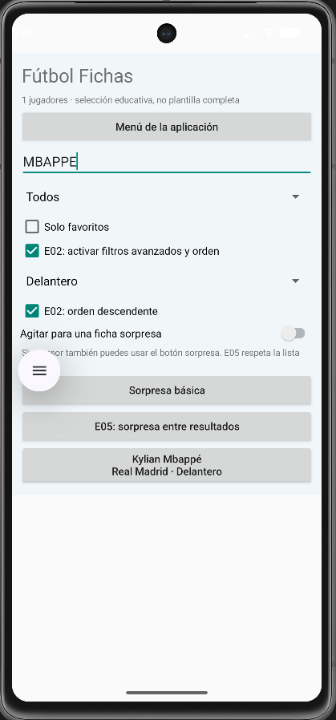
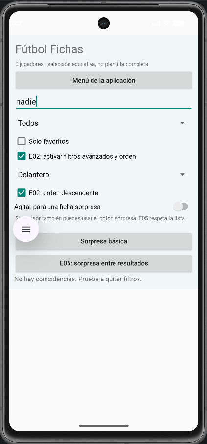
E02Filtros.ktpackage es.aula.futbol
// Declara el objeto E02Filtros: aquí vive tu solución evaluable.
object E02Filtros {
// Filtra y ordena el catálogo combinando todos los criterios a la vez.
// ENTRADA: rows = catálogo; query = texto; club/position = filtros exactos
// (vacío significa "todos"); favorites/onlyFavorites = filtro de favoritos;
// descending = true ordena de la Z a la A.
// SALIDA: la lista que cumple TODO a la vez, ordenada por nombre.
fun filter(rows: List<Player>, query: String, club: String, position: String, favorites: Set<Int>, onlyFavorites: Boolean, descending: Boolean): List<Player> {
// Se normaliza el texto una sola vez: así "MBAPPÉ" y "mbappe" son la misma búsqueda.
val text = TextKey.of(query)
// Las cuatro condiciones se combinan con AND; un filtro vacío significa "todos".
val found = rows.filter { p ->
(text.isEmpty() || TextKey.of(p.name).contains(text)) &&
(club.isEmpty() || p.club == club) &&
(position.isEmpty() || p.position == position) &&
(!onlyFavorites || p.id in favorites)
}
// Se ordena por nombre normalizado; en descendente basta con invertir el resultado.
val ordered = found.sortedBy { TextKey.of(it.name) }
return if (descending) ordered.reversed() else ordered
}
// demo() lo usa Academia: filtra los delanteros del Barça sin favoritos.
fun demo(): String = filter(Seed.players, "", "FC Barcelona", "Delantero", emptySet(), false, false).joinToString { it.name }
}
mark: recorta etiquetas, quita vacías y repetidas sin distinguir tildes ni mayúsculas, admite como máximo cinco de 24 caracteres y valida la valoración de 0 a 5.copy conserva el favorito y la nota de la ficha.E03Test y en la ficha de Raphinha: valoración 4 guardada y valoración 6 rechazada.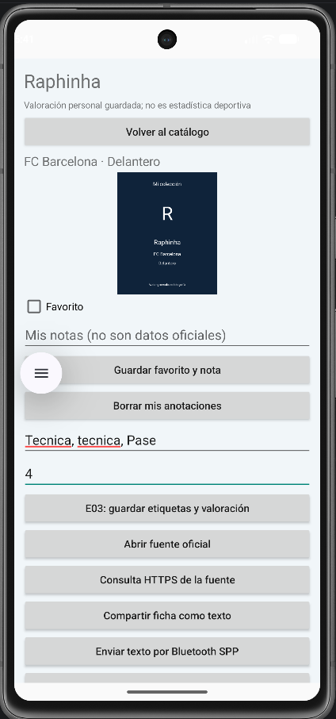
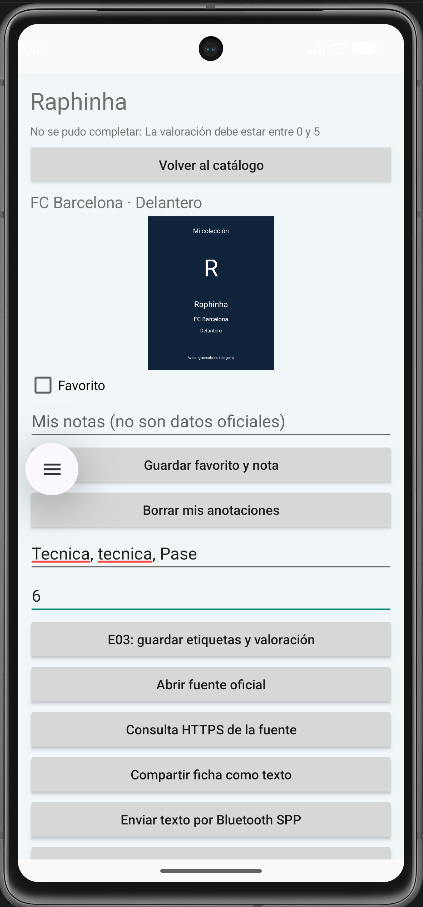
E03Etiquetas.ktpackage es.aula.futbol
// Declara el objeto E03Etiquetas: aquí vive tu solución evaluable.
object E03Etiquetas {
// Guarda etiquetas limpias y valoración personal sobre una marca existente.
// ENTRADA: original = la marca actual; tags = etiquetas escritas por el alumno;
// rating = valoración personal de 0 a 5.
// SALIDA: una Mark nueva con las etiquetas y valoración ya validadas.
fun mark(original: Mark, tags: List<String>, rating: Int): Mark {
// Se recortan las etiquetas y se descartan las vacías.
val trimmed = tags.map { it.trim() }.filter { it.isNotEmpty() }
// Ninguna etiqueta puede superar los 24 caracteres.
require(trimmed.all { it.length <= 24 }) { "Cada etiqueta admite como máximo 24 caracteres" }
// Se eliminan las repetidas sin distinguir tildes ni mayúsculas; se conserva la primera escrita.
val seen = mutableSetOf<String>()
val clean = trimmed.filter { seen.add(TextKey.of(it)) }
// El máximo de cinco se cuenta después de limpiar, porque "Pase" y " pase " son una sola.
require(clean.size <= 5) { "Se admiten como máximo 5 etiquetas" }
// La valoración es personal y va de 0 a 5.
require(rating in 0..5) { "La valoración debe estar entre 0 y 5" }
// copy conserva favorito y nota, que son las otras propiedades de la ficha.
return original.copy(tags = clean, rating = rating)
}
// demo() lo usa Academia: guarda dos etiquetas repetidas y valoración 4.
fun demo(): String = mark(Mark(),listOf("Técnica"," técnica "),4).toString()
}
compare: exige de dos a cuatro fichas con IDs distintos y devuelve una línea nombre | club | posición por jugador.IllegalArgumentException.E04Test y con la pantalla Comparar jugadores.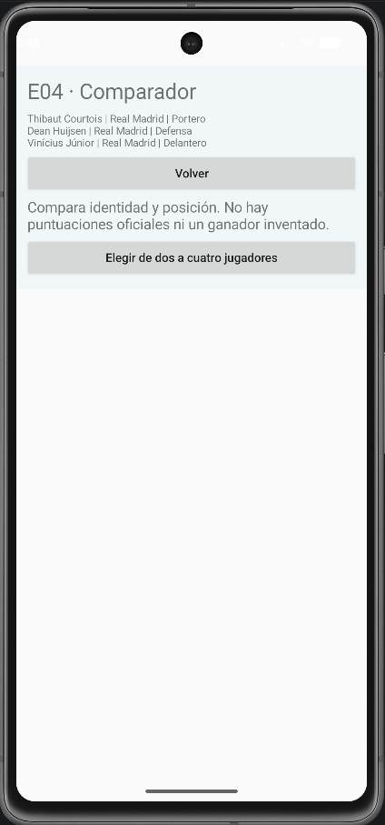
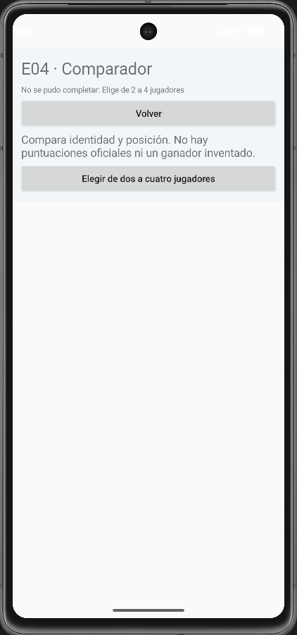
E04Comparador.ktpackage es.aula.futbol
// Declara el objeto E04Comparador: aquí vive tu solución evaluable.
object E04Comparador {
// Compara varias fichas y devuelve el texto con la comparación.
// ENTRADA: rows = de 2 a 4 jugadores distintos.
// SALIDA: texto legible con la comparación real; error si incumple las reglas.
fun compare(rows: List<Player>): String {
// Se exigen de dos a cuatro fichas; con menos no hay comparación y con más no cabe en pantalla.
require(rows.size in 2..4) { "Elige de 2 a 4 jugadores" }
require(rows.map { it.id }.toSet().size == rows.size) { "No se puede comparar un jugador consigo mismo" }
// Solo se muestran campos reales de la ficha; no hay puntuaciones ni ganador.
return rows.joinToString("\n") { "${it.name} | ${it.club} | ${it.position}" }
}
// demo() lo usa Academia: compara a los dos primeros del catálogo.
fun demo(): String = compare(Seed.players.take(2))
}
choose: devuelve null si no hay candidatos y usa Math.floorMod para que cualquier índice dé la vuelta.% de Kotlin devuelve negativos, por eso -1 debe llevar al último jugador y no fallar.E05Test y con el botón E05: con el filtro FC Barcelona sale Dani Olmo, y con nadie sale "Sin candidatos".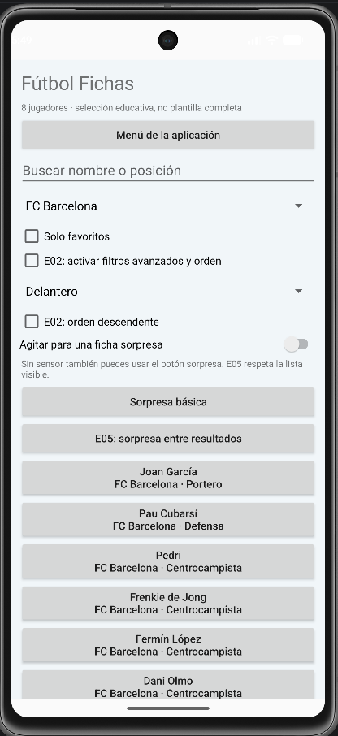
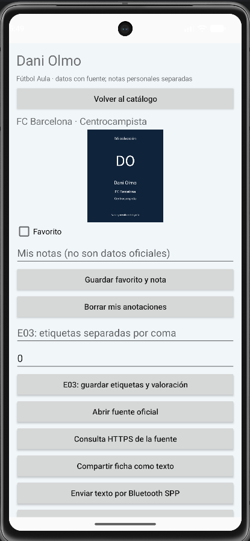
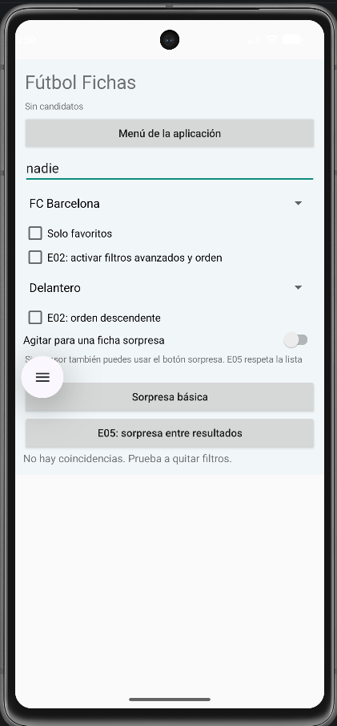
E05Sensor.ktpackage es.aula.futbol
// Declara el objeto E05Sensor: aquí vive tu solución evaluable.
object E05Sensor {
// Elige un jugador de la lista con un índice que da la vuelta.
// ENTRADA: candidates = lista visible tras filtros; index = número cualquiera.
// SALIDA: el jugador elegido, o null si la lista está vacía.
fun choose(candidates: List<Player>, index: Int): Player? {
// Sin candidatos no hay a quién elegir.
if (candidates.isEmpty()) return null
// floorMod nunca devuelve negativos: 16 sobre 16 jugadores da la vuelta y -1 lleva al último.
return candidates[Math.floorMod(index, candidates.size)]
}
// demo() lo usa Academia: elige el primero de los jugadores del Barça.
fun demo(): String = choose(Seed.players.filter { it.club == "FC Barcelona" },0)?.name ?: "Sin candidatos"
}
parameters: rechaza NaN y valores fuera de 0 a 3, y devuelve (valor, 128·(1−valor)).inSampleSize empezaba en 0; lo corregimos en MainActivity.kt.E06Test y en pantalla: contraste 0 visible y contraste 4 rechazado.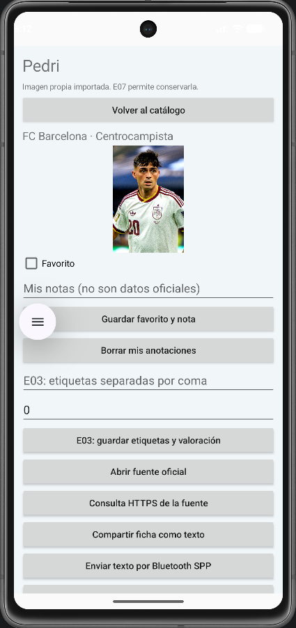
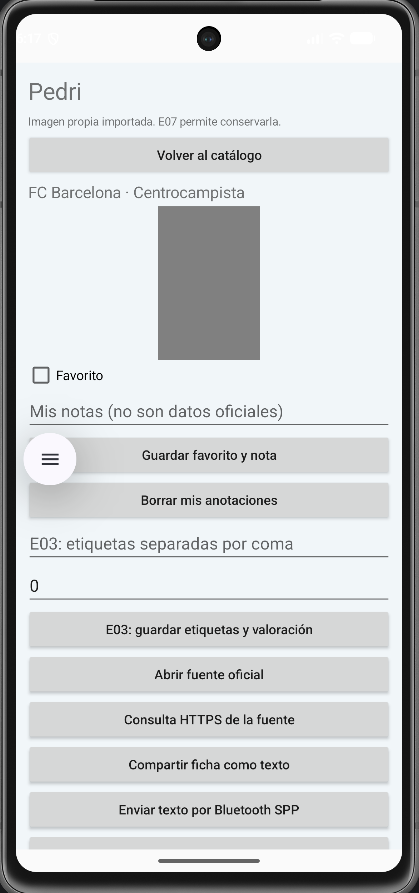
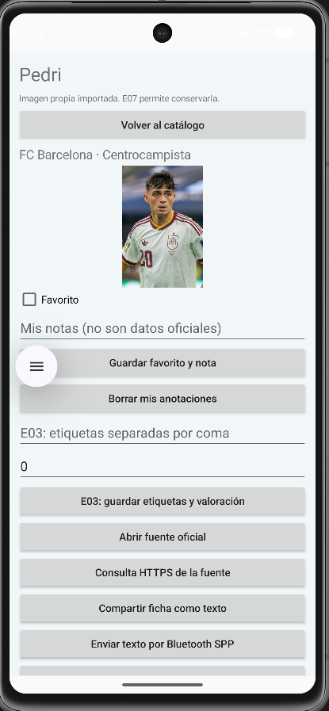
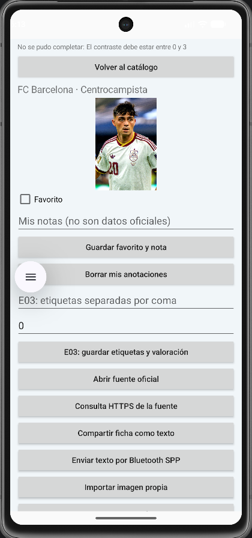
E06Contraste.ktpackage es.aula.futbol
// Declara el objeto E06Contraste: aquí vive tu solución evaluable.
object E06Contraste {
// Calcula los parámetros de la matriz de contraste para un valor dado.
// ENTRADA: value = contraste pedido, entre 0 y 3 (no puede ser NaN).
// SALIDA: el par (escala, desplazamiento) para la matriz de color.
fun parameters(value: Float): Pair<Float, Float> {
// NaN, infinitos y valores fuera de 0..3 se rechazan antes de calcular nada.
require(value.isFinite() && value in 0f..3f) { "El contraste debe estar entre 0 y 3" }
// Escala = valor; desplazamiento = 128 * (1 - valor). Con valor 1 el nivel no cambia.
return Pair(value, 128f * (1f - value))
}
// demo() lo usa Academia: pide los parámetros del contraste 1.4.
fun demo(): String = parameters(1.4f).toString()
}
filename: exige ID positivo y extensión png o jpg, y construye jugador_ID.ext sin rutas del usuario.../ o barras en el nombre.E07Test, con Comprobar E07 en verde y reiniciando la app.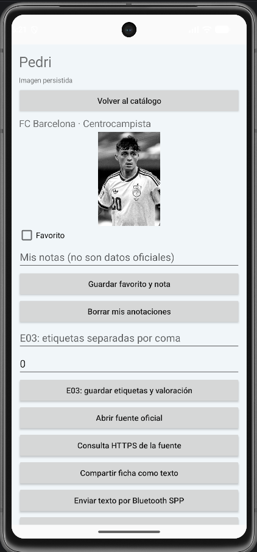
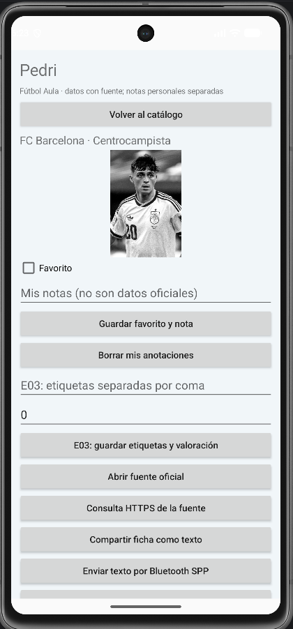
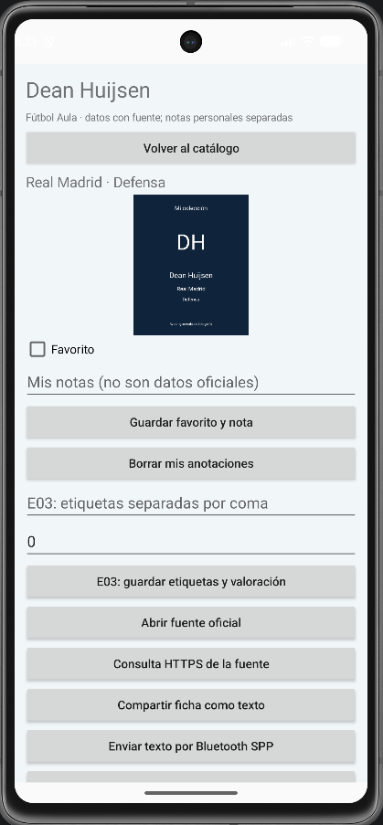
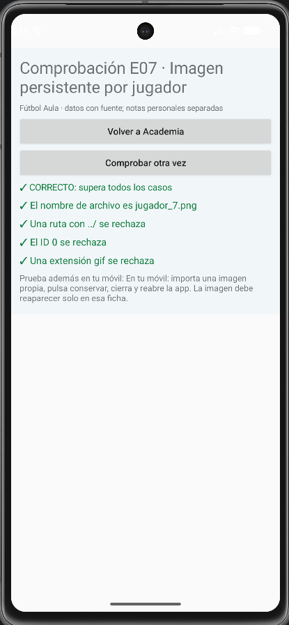
E07Imagen.ktpackage es.aula.futbol
// Declara el objeto E07Imagen: aquí vive tu solución evaluable.
object E07Imagen {
// Construye el nombre de archivo seguro para la imagen de un jugador.
// ENTRADA: id = número positivo del jugador; extension = "png" o "jpg".
// SALIDA: el nombre de archivo; error si el ID o la extensión no son válidos.
fun filename(id: Int, extension: String): String {
// Un ID positivo evita nombres como "jugador_0" o "jugador_-3".
require(id > 0) { "El ID debe ser positivo" }
// Solo se admiten png y jpg; así nunca entra una ruta con "../" o barras en el nombre.
require(extension == "png" || extension == "jpg") { "Extensión no admitida: use png o jpg" }
// El nombre lo construimos nosotros, el usuario no aporta ninguna ruta.
return "jugador_$id.$extension"
}
// demo() lo usa Academia: el nombre del jugador 7 en formato png.
fun demo(): String = filename(7,"png")
}
next: admite solo dirección −1 o 1, devuelve null con lista vacía, valida el índice y recorre en círculo.Math.floorMod.E08Test y con Comprobar E08 en verde.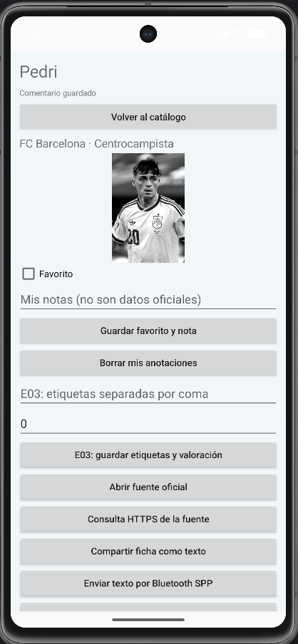
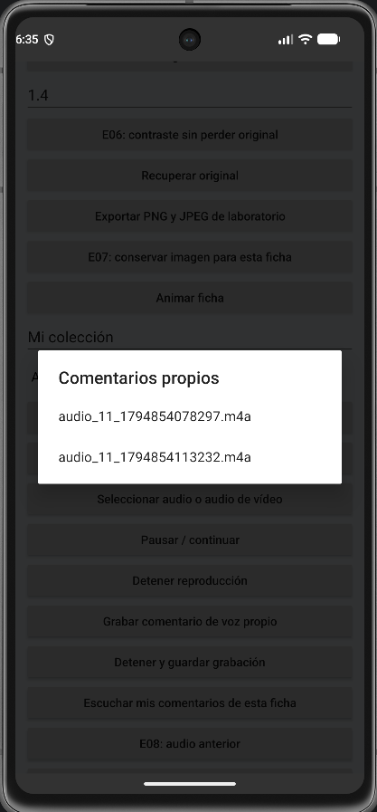
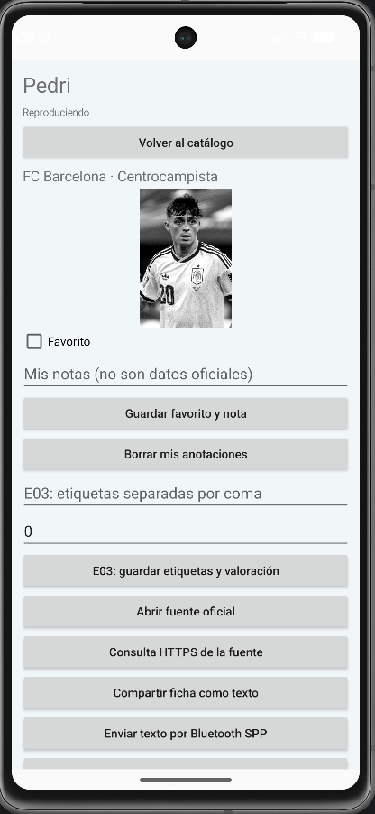
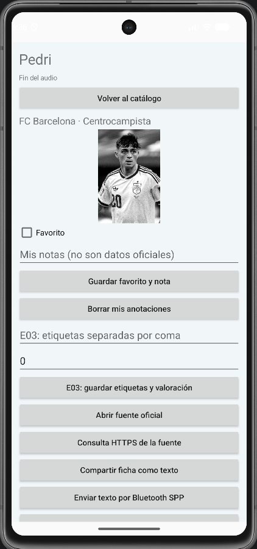
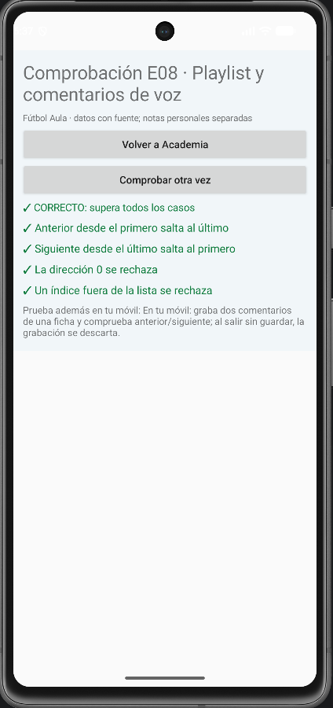
E08Audio.ktpackage es.aula.futbol
// Declara el objeto E08Audio: aquí vive tu solución evaluable.
object E08Audio {
// Calcula el índice del audio anterior o siguiente en la playlist.
// ENTRADA: current = índice actual; size = cuántos audios hay;
// direction = -1 (anterior) o 1 (siguiente).
// SALIDA: el nuevo índice (con vuelta circular), o null si no hay audios.
fun next(current: Int, size: Int, direction: Int): Int? {
// Solo hay dos movimientos posibles: anterior (-1) o siguiente (1).
require(direction == -1 || direction == 1) { "La dirección debe ser -1 o 1" }
require(size >= 0) { "El tamaño no puede ser negativo" }
// Sin audios no hay hacia dónde moverse.
if (size == 0) return null
// El índice actual debe existir en la lista.
require(current in 0 until size) { "El índice actual está fuera de la lista" }
// Recorrido circular: desde el primero hacia atrás se llega al último.
return Math.floorMod(current + direction, size)
}
// demo() lo usa Academia: el anterior al primero de una lista de 3 (circular).
fun demo(): String = next(0,3,-1).toString()
}
validate: exige once jugadores con IDs distintos y reparto 1-4-3-3; nunca lanza error.E09Test y en la pantalla Alineación: once válido y once con 10/11.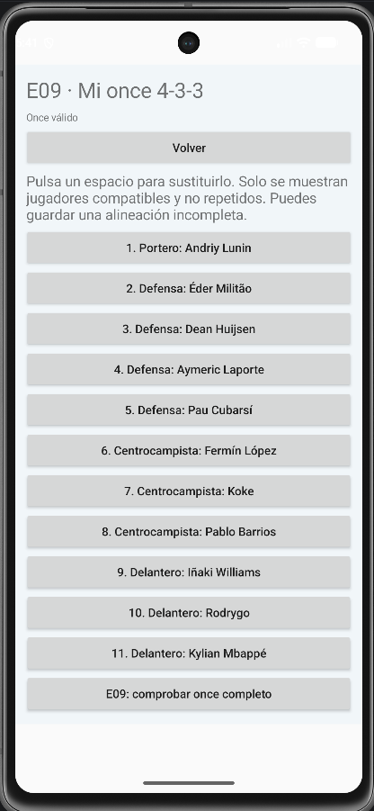
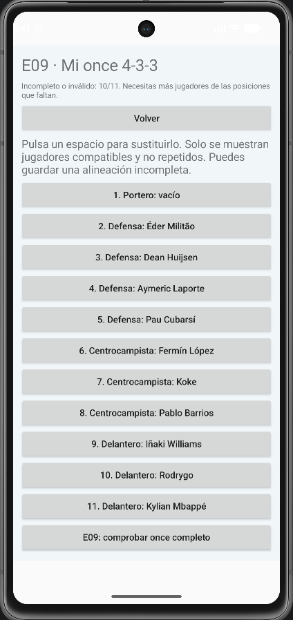
E09Alineacion.ktpackage es.aula.futbol
// Declara el objeto E09Alineacion: aquí vive tu solución evaluable.
object E09Alineacion {
// Comprueba si la lista forma un once 4-3-3 completo y válido.
// ENTRADA: rows = los jugadores elegidos (puede venir incompleta).
// SALIDA: true solo si es un once válido; false en cualquier otro caso.
fun validate(rows: List<Player>): Boolean {
// Esta función solo responde sí o no: nunca lanza error.
if (rows.size != 11) return false
// Once jugadores con IDs distintos; un repetido invalida la alineación.
if (rows.map { it.id }.toSet().size != 11) return false
// Reparto exacto 1-4-3-3; como suman 11, cualquier otra posición queda descartada sola.
val count = rows.groupingBy { it.position }.eachCount()
return count["Portero"] == 1 && count["Defensa"] == 4 &&
count["Centrocampista"] == 3 && count["Delantero"] == 3
}
// demo() lo usa Academia: valida los primeros 11 del catálogo (no es un 4-3-3).
fun demo(): String = validate(Seed.players.take(11)).toString()
}
add: recorta el nombre, exige de 1 a 40 caracteres y rechaza nombres equivalentes sin tildes, mayúsculas ni espacios.E10Test y en pantalla: tecnica se rechaza porque ya existe Tecnica.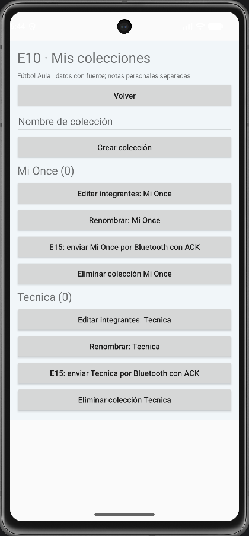
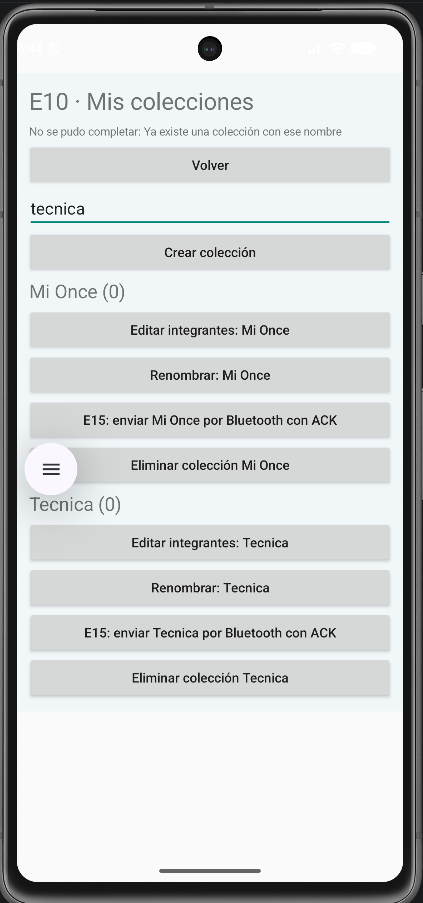
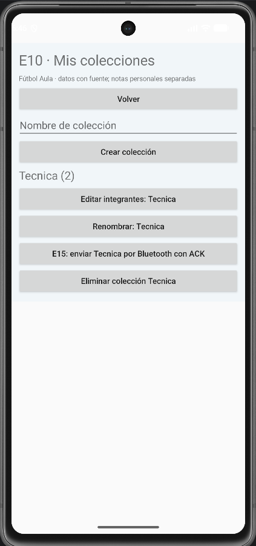
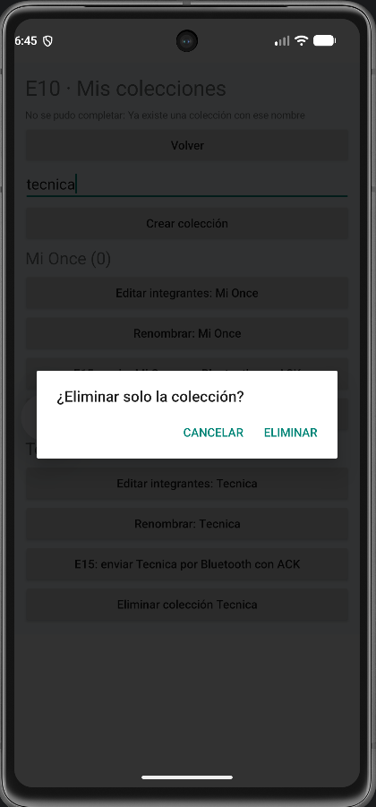
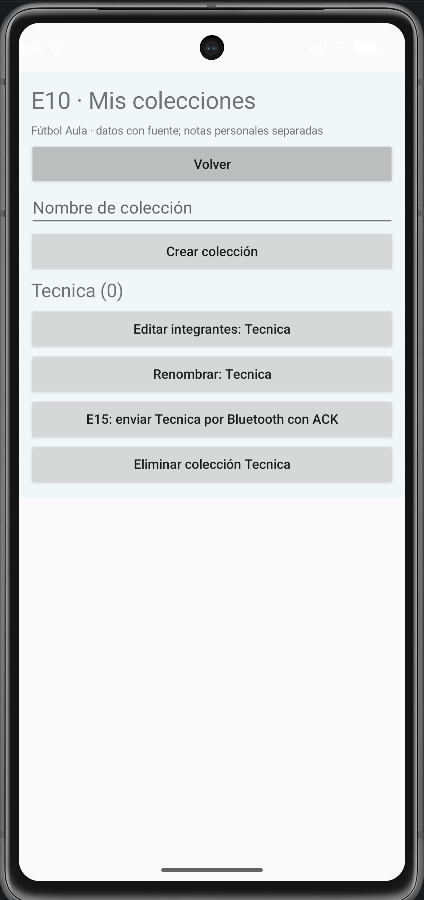
E10Colecciones.ktpackage es.aula.futbol
// Declara el objeto E10Colecciones: aquí vive tu solución evaluable.
object E10Colecciones {
// Añade un nombre de colección nuevo, validado y limpio.
// ENTRADA: names = nombres que ya existen; name = el nombre que se quiere añadir.
// SALIDA: la lista de nombres con el nuevo incluido; error si no es válido.
fun add(names: List<String>, name: String): List<String> {
// Se recorta el nombre y se exige una longitud de 1 a 40 caracteres.
val clean = name.trim()
require(clean.length in 1..40) { "El nombre debe tener entre 1 y 40 caracteres" }
// Clave de comparación: sin tildes, sin mayúsculas y sin espacios.
fun key(value: String) = TextKey.of(value).replace(Regex("\\s+"), "")
require(names.none { key(it) == key(clean) }) { "Ya existe una colección con ese nombre" }
// Lista previa más el nombre limpio al final.
return names + clean
}
// demo() lo usa Academia: añade "Mi once" a una lista que ya tiene "Promesas".
fun demo(): String = add(listOf("Promesas"),"Mi once").joinToString()
}
restore: valida con Wire.decode antes de mezclar y sobrescribe solo favorito y nota de los IDs presentes.E11Test y en pantalla: exportar, importar, confirmar y restaurar en transacción.E11Test y Comprobar E11.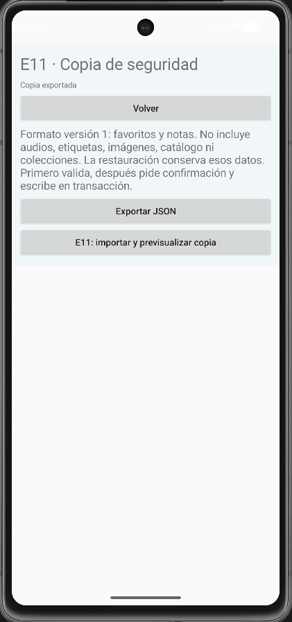
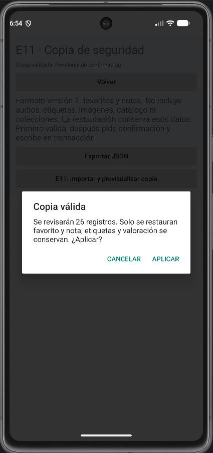
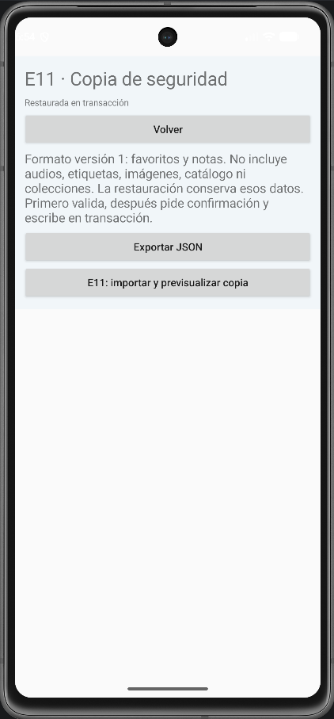
E11Copia.ktpackage es.aula.futbol
// Declara el objeto E11Copia: aquí vive tu solución evaluable.
object E11Copia {
// Lee y valida una copia de seguridad para poder restaurarla.
// ENTRADA: current = datos actuales; text = texto JSON de la copia;
// known = IDs que existen en este dispositivo.
// SALIDA: mapa con los datos recuperables; error si la copia es inválida.
fun restore(current: Map<Int, Mark>, text: String, known: Set<Int>): Map<Int, Mark> {
// Wire.decode valida versión, tipos y duplicados, y descarta los IDs desconocidos.
// Si el texto no es JSON lanza una excepción antes de tocar ningún dato.
val backup = Wire.decode(text, known)
// Se parte de los datos actuales para conservar los jugadores ausentes de la copia.
val result = LinkedHashMap(current)
// La copia sobrescribe solo favorito y nota; etiquetas y valoración se mantienen.
backup.forEach { (id, mark) ->
result[id] = (current[id] ?: Mark()).copy(favorite = mark.favorite, note = mark.note)
}
return result
}
// demo() lo usa Academia: restaura una copia mínima con un favorito.
fun demo(): String = restore(emptyMap(),Wire.encode(mapOf(1 to Mark(true,"Nota"))),setOf(1)).toString()
}
resolve: una respuesta remota válida, aunque vacía, se muestra como actual (stale=false).stale=true, y sin datos guardados la lista queda vacía con un mensaje claro.E12Test y con la pantalla Datos sin conexión.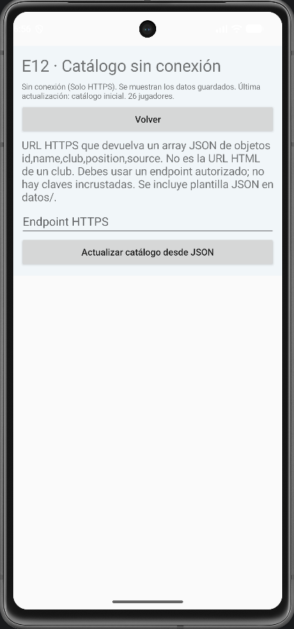
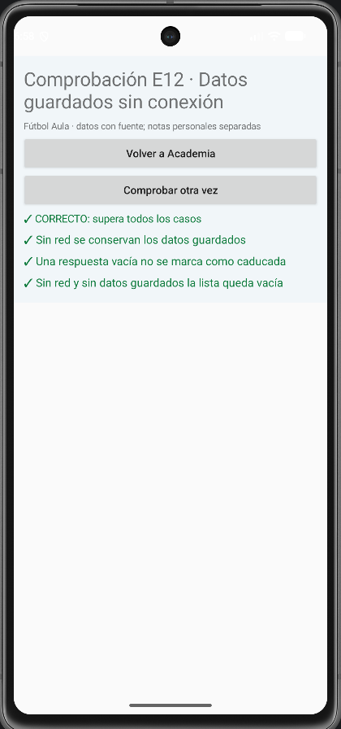
E12Cache.ktpackage es.aula.futbol
// Declara el objeto E12Cache: aquí vive tu solución evaluable.
object E12Cache {
// Decide qué datos mostrar según cómo fue la descarga.
// ENTRADA: remote = catálogo descargado (null si falló); saved = datos guardados;
// error = mensaje del fallo (null si todo fue bien).
// SALIDA: CacheResult con las filas a mostrar, si están caducadas y el mensaje.
fun resolve(remote: List<Player>?, saved: List<Player>, error: String?): CacheResult {
// Respuesta válida: remote existe y no hubo error. Una lista vacía también es válida.
if (remote != null && error == null) return CacheResult(remote, false, "Actualizado")
// La descarga falló: se mantiene el último resultado guardado y se marca como caducado.
val reason = error ?: "sin respuesta"
if (saved.isNotEmpty()) return CacheResult(saved, true, "Sin conexión ($reason). Se muestran los datos guardados")
// Primera apertura sin red: no hay nada que enseñar, pero la app sigue funcionando.
return CacheResult(emptyList(), true, "Sin datos: no hay conexión ($reason) ni datos guardados")
}
// demo() lo usa Academia: qué pasa si no hay red y solo están los datos iniciales.
fun demo(): String = resolve(null,Seed.players,"sin red").message
}
build: valida cantidad, IDs, jugadores suficientes y al menos dos clubes, y crea preguntas de jugadores distintos.E13Test, con Comprobar E13 en verde y jugando una partida completa.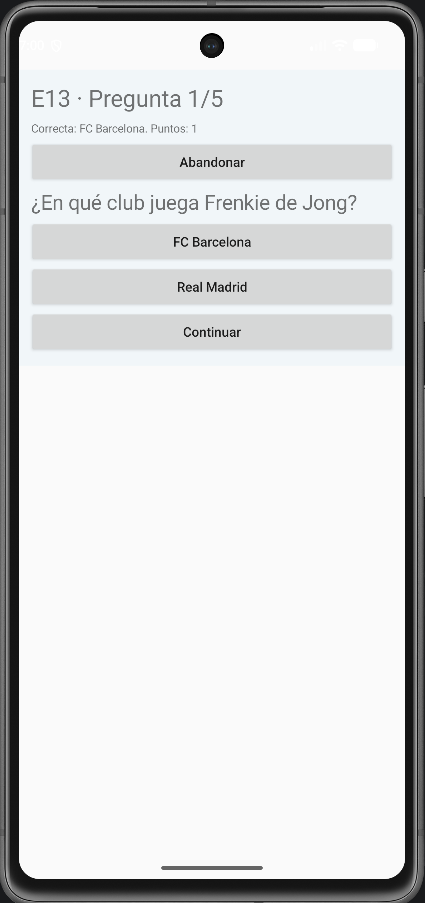
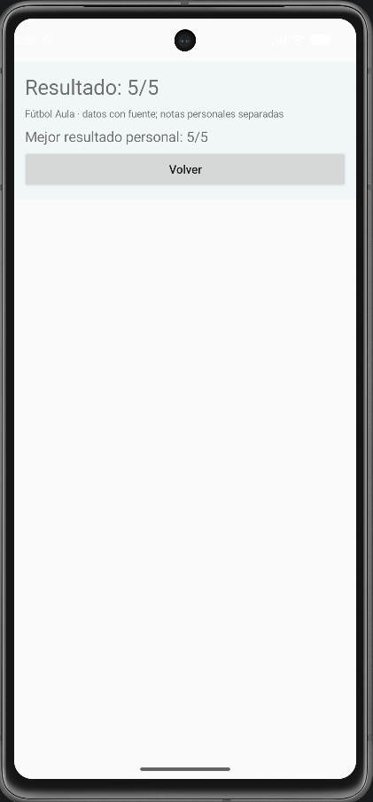
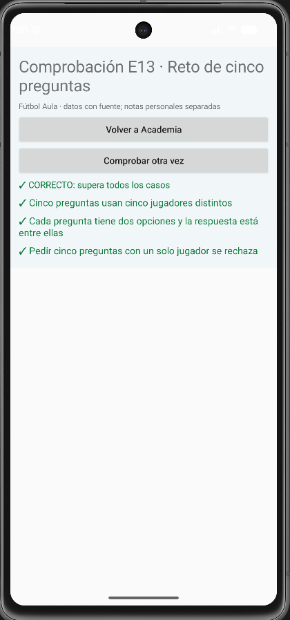
E13Quiz.ktpackage es.aula.futbol
// Declara el objeto E13Quiz: aquí vive tu solución evaluable.
object E13Quiz {
// Construye las preguntas del cuestionario a partir del catálogo.
// ENTRADA: rows = jugadores disponibles (ya mezclados por quien llama);
// count = cuántas preguntas se quieren.
// SALIDA: la lista de preguntas listas para jugar; error si el catálogo no da para tanto.
fun build(rows: List<Player>, count: Int): List<Question> {
require(count > 0) { "El número de preguntas debe ser positivo" }
require(rows.map { it.id }.toSet().size == rows.size) { "Hay IDs repetidos en el catálogo" }
require(rows.size >= count) { "No hay jugadores suficientes para $count preguntas" }
// Con un solo club no existe una segunda opción distinta.
val clubs = rows.map { it.club }.distinct()
require(clubs.size >= 2) { "Se necesitan al menos dos clubes" }
// Cada pregunta usa un jugador distinto: rows ya llega mezclado, por tanto basta con tomar los primeros.
return rows.take(count).map { player ->
// El distractor es el club de otro jugador; nunca coincide con la respuesta.
val other = clubs.filter { it != player.club }.random()
Question(player.id, "¿En qué club juega ${player.name}?", listOf(player.club, other).shuffled(), player.club)
}
}
// demo() lo usa Academia: construye 5 preguntas con el catálogo inicial.
fun demo(): String = build(Seed.players,5).joinToString("\n") { it.text }
}
title: valida el color de 0 a 2 y un título de 1 a 28 caracteres, y devuelve el título recortado.CardProvider, porque ya es infraestructura.E14Test, con Comprobar E14 en verde y compartiendo el PNG hacia otra aplicación.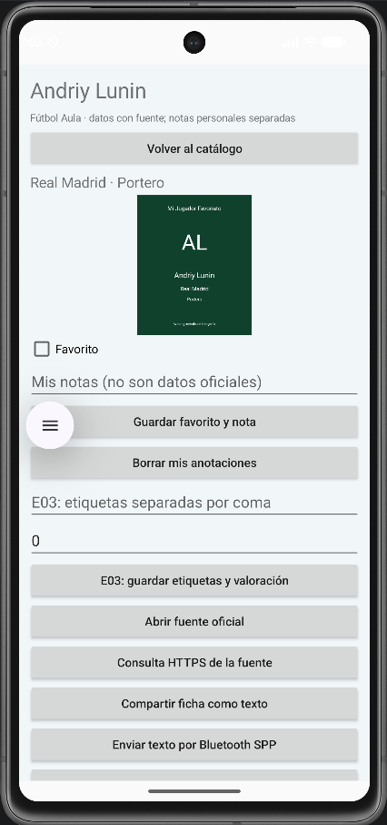
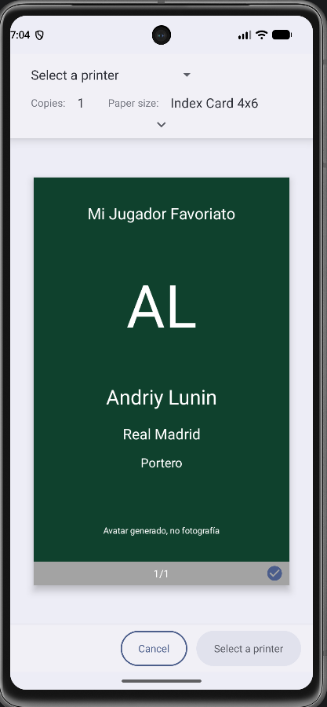
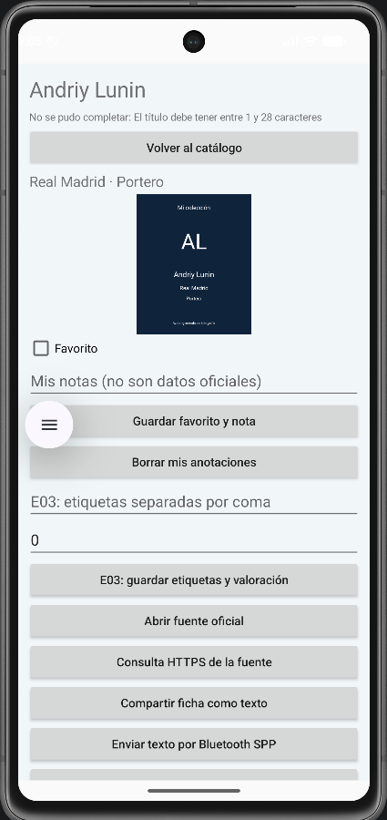
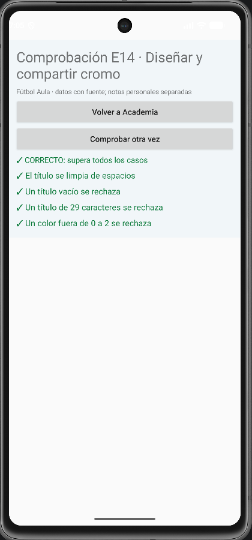
E14Cromo.ktpackage es.aula.futbol
// Declara el objeto E14Cromo: aquí vive tu solución evaluable.
object E14Cromo {
// Limpia y valida el título del cromo antes de dibujarlo.
// ENTRADA: raw = texto escrito por el alumno; color = 0 (azul), 1 (violeta) o 2 (verde).
// SALIDA: el título limpio; error si está vacío, es demasiado largo o el color no existe.
fun title(raw: String, color: Int): String {
// El color es un índice: 0 azul, 1 violeta, 2 verde.
require(color in 0..2) { "El color debe ser 0, 1 o 2" }
// Se recorta el título sin alterar su contenido y se exige de 1 a 28 caracteres.
val clean = raw.trim()
require(clean.length in 1..28) { "El título debe tener entre 1 y 28 caracteres" }
return clean
}
// demo() lo usa Academia: valida un título de ejemplo con el color violeta.
fun demo(): String = title("Mi jugador favorito",1)
}
decode: valida 8192 bytes UTF-8, versión 1, IDs enteros, lista no vacía, sin duplicados y conocidos.ñ ocupa dos bytes.E15Test y con Comprobar E15 en verde.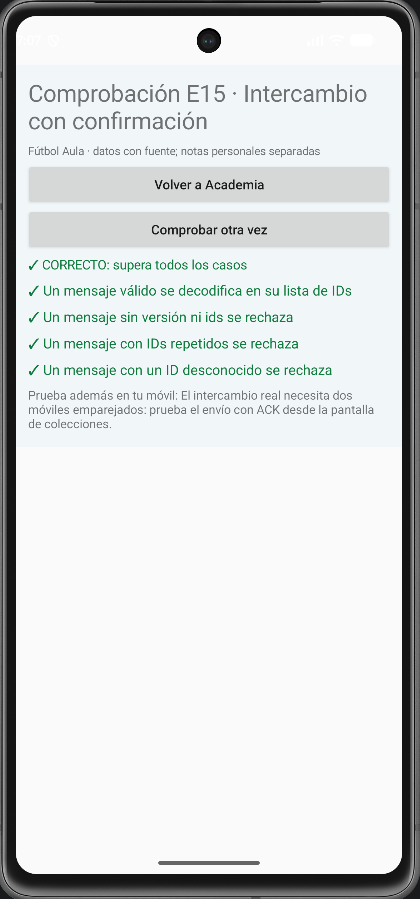
E15Bluetooth.ktpackage es.aula.futbol
import org.json.JSONObject
// Declara el objeto E15Bluetooth: aquí vive tu solución evaluable.
object E15Bluetooth {
// Decodifica y valida un mensaje de colección recibido por Bluetooth.
// ENTRADA: text = el mensaje JSON tal como llega; known = IDs conocidos aquí.
// SALIDA: la lista de IDs válidos; error si el mensaje no cumple el protocolo.
fun decode(text: String, known: Set<Int>): List<Int> {
// El tamaño se mide en bytes UTF-8, no en caracteres: una "ñ" ocupa dos.
require(text.toByteArray(Charsets.UTF_8).size <= 8192) { "Mensaje demasiado grande" }
// Si el texto no es JSON, JSONObject lanza una excepción que el receptor captura y rechaza.
val root = JSONObject(text)
require(root.getInt("version") == 1) { "Versión no admitida" }
val array = root.getJSONArray("ids")
require(array.length() > 0) { "La lista de IDs está vacía" }
// Cada elemento debe ser un entero real; "1" o 1.5 no valen.
val ids = (0 until array.length()).map { i ->
val value = array.get(i)
require(value is Int) { "El ID en la posición $i no es un entero" }
value
}
require(ids.toSet().size == ids.size) { "IDs repetidos" }
require(known.containsAll(ids)) { "Hay IDs desconocidos en este dispositivo" }
// Se devuelven en el mismo orden en que llegaron.
return ids
}
// demo() lo usa Academia: decodifica un mensaje válido con los IDs 1 y 2.
fun demo(): String = decode("{\"version\":1,\"ids\":[1,2]}",setOf(1,2)).toString()
}
counts: elimina duplicados por ID y devuelve el recuento por club ordenado alfabéticamente.summary indica el club más representado; está pendiente de acordar con el docente.E16Test, con E16AmpliacionTest (3 pruebas) y en el panel con uno y con varios clubes.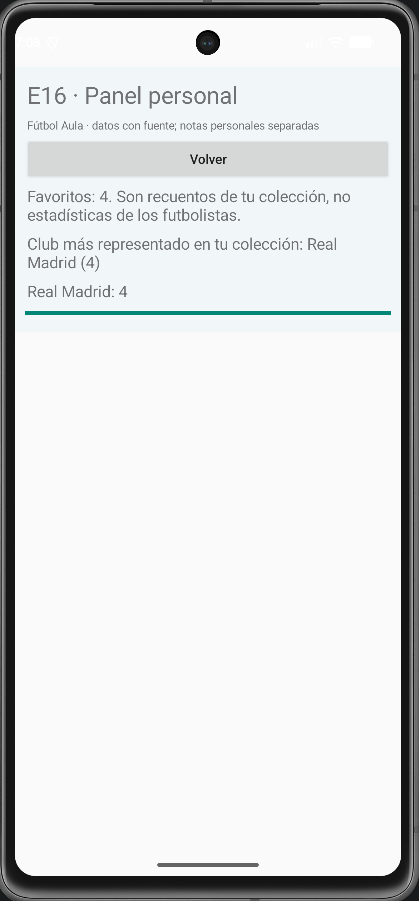
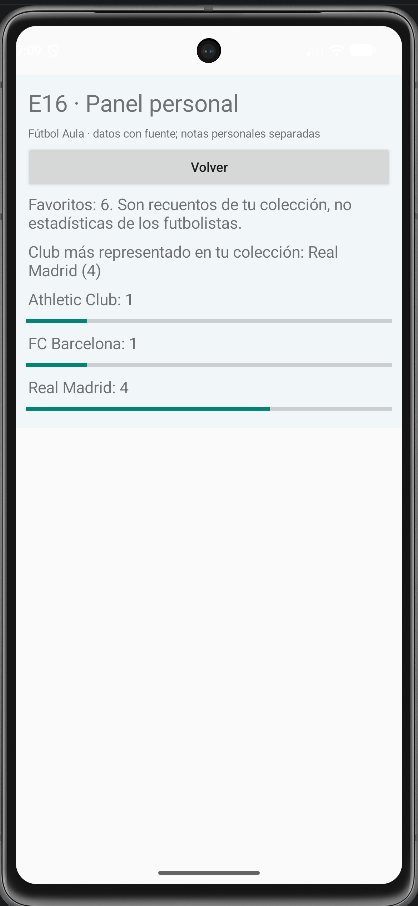
E16Panel.ktpackage es.aula.futbol
// Declara el objeto E16Panel: aquí vive tu solución evaluable.
object E16Panel {
// Cuenta jugadores por club para dibujar el panel personal.
// ENTRADA: rows = los jugadores elegidos (favoritos, normalmente).
// SALIDA: mapa con club y cuántos hay de ese club, ordenado alfabéticamente.
fun counts(rows: List<Player>): Map<String, Int> {
// Primero se quitan los duplicados por ID y después se cuenta por club.
val byClub = rows.distinctBy { it.id }.groupingBy { it.club }.eachCount()
// El mapa resultante conserva el orden alfabético por club (sin distinguir tildes ni mayúsculas).
return byClub.entries.sortedBy { TextKey.of(it.key) }.associate { it.key to it.value }
}
// AMPLIACIÓN PROPIA (pendiente de acordar con el docente): resumen del club más representado.
// Solo usa recuentos de la colección, no estadísticas deportivas. Si hay empate, gana el primero por orden alfabético.
// Sin jugadores devuelve un mensaje neutro en lugar de fallar.
fun summary(rows: List<Player>): String {
val top = counts(rows).entries.maxByOrNull { it.value } ?: return "Aún no hay favoritos que resumir"
return "Club más representado en tu colección: ${top.key} (${top.value})"
}
// demo() lo usa Academia: el recuento por club del catálogo inicial.
fun demo(): String = counts(Seed.players).toString()
}